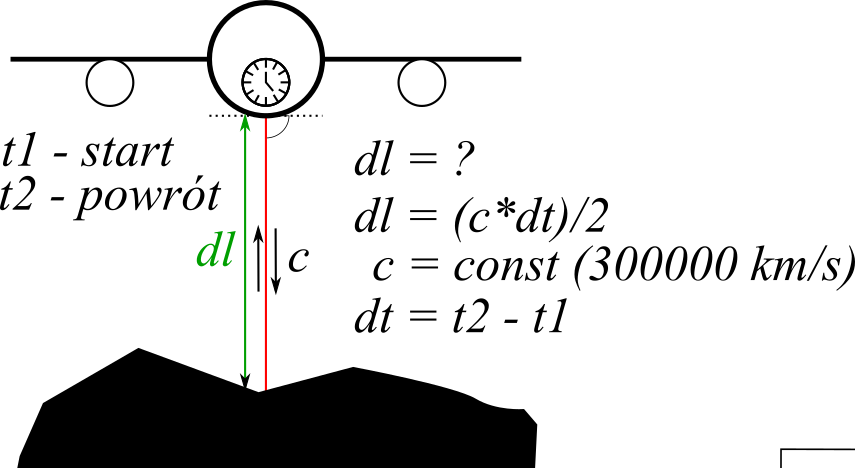
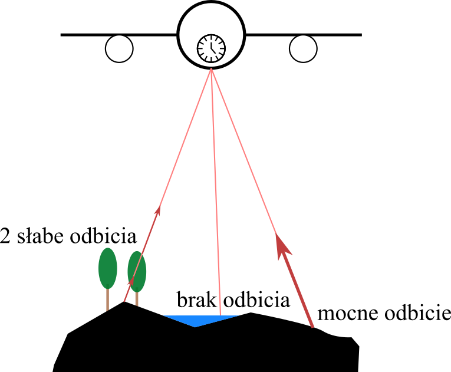
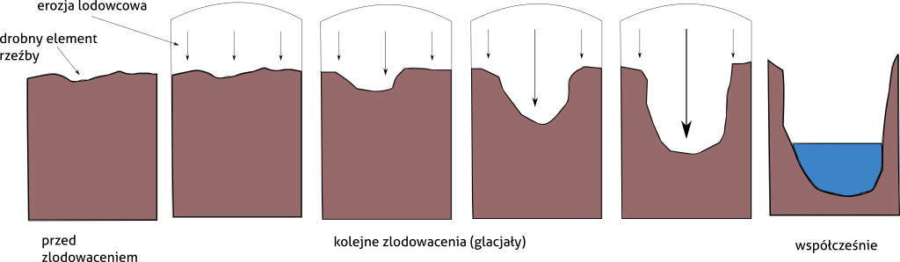
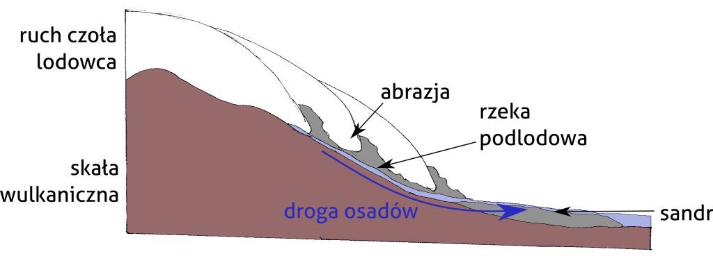
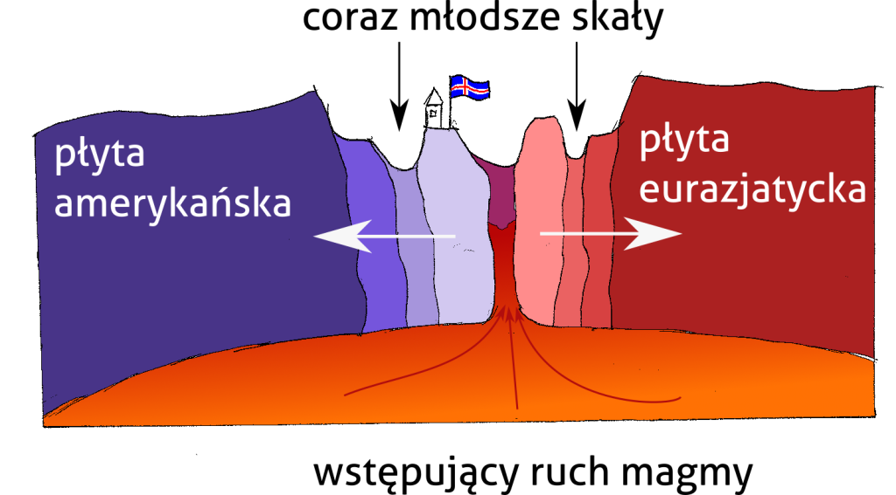
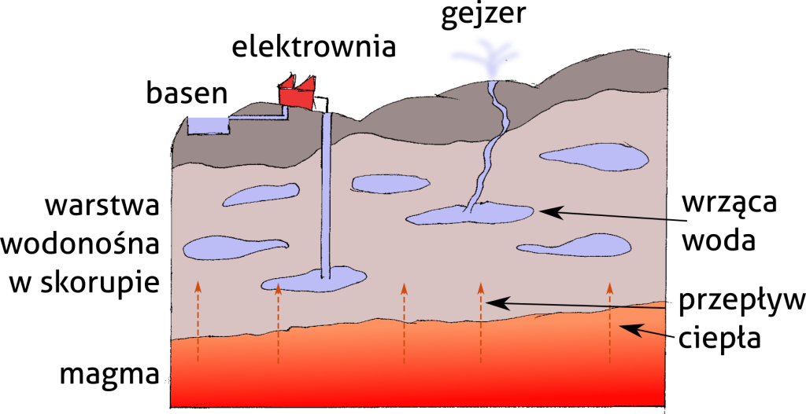

<?xml version="1.0" encoding="UTF-8"?><rss version="2.0"
	xmlns:content="http://purl.org/rss/1.0/modules/content/"
	xmlns:wfw="http://wellformedweb.org/CommentAPI/"
	xmlns:dc="http://purl.org/dc/elements/1.1/"
	xmlns:atom="http://www.w3.org/2005/Atom"
	xmlns:sy="http://purl.org/rss/1.0/modules/syndication/"
	xmlns:slash="http://purl.org/rss/1.0/modules/slash/"
	>

<channel>
	<title>Projektowanie graficzne &#8211; Julian Podgórski</title>
	<atom:link href="" rel="self" type="application/rss+xml" />
	<link>../../../../mojastrona/index.html</link>
	<description>Jestem geografem i specjalistą GIS, szukającym pracy zdalnej</description>
	<lastBuildDate>Mon, 29 Jul 2024 10:32:18 +0000</lastBuildDate>
	<language>pl-PL</language>
	<sy:updatePeriod>
	hourly	</sy:updatePeriod>
	<sy:updateFrequency>
	1	</sy:updateFrequency>
	<generator>https://wordpress.org/?v=6.6.1</generator>
	<item>
		<title>Popularyzacja nauki</title>
		<link>../../../science-communication-2/index.html</link>
		
		<dc:creator><![CDATA[jpodgo]]></dc:creator>
		<pubDate>Fri, 26 Jul 2024 14:35:19 +0000</pubDate>
				<category><![CDATA[Projektowanie graficzne]]></category>
		<category><![CDATA[Wszystko]]></category>
		<guid isPermaLink="false">../../../index.html?p=208</guid>

					<description><![CDATA[Podczas mojej pracy w Instytucie Geofizyki Polskiej Akademii Nauk byłem zaangażowany w liczne działania popularnonaukowe. Wśród moich zadań znajdowało się projektowanie i przedstawianie webinariów (seminariów internetowych) dla dzieci i szerokiej publiczności. Webinaria obejmowały tematy geofizyki, techniczne aspekty teledetekcji i kwestie kulturowe Arktyki. Niektóre z nich wymagały ode mnie przygotowania materiałów graficznych takich, jak diagramy i<div class="read-more-wrapper"><a class="read-more" href="../../../science-communication-2/index.html" title="Read More"> <span class="button ">Read More</span></a></div>]]></description>
										<content:encoded><![CDATA[
<p class="has-medium-font-size">Podczas mojej pracy w Instytucie Geofizyki Polskiej Akademii Nauk byłem zaangażowany w liczne działania popularnonaukowe. Wśród moich zadań znajdowało się projektowanie i przedstawianie webinariów (seminariów internetowych) dla dzieci i szerokiej publiczności. Webinaria obejmowały tematy geofizyki, techniczne aspekty teledetekcji i kwestie kulturowe Arktyki. Niektóre z nich wymagały ode mnie przygotowania materiałów graficznych takich, jak diagramy i mapy. Zebrałem tutaj te grafiki. Wykorzystywałem Inkscape do narysowania cyfrowych ilustracji, ale część z nich jest oparta o moje rysunki ołówkiem na papierze.</p>


<div class="wp-block-columns is-layout-flex wp-container-core-columns-is-layout-1 wp-block-columns-is-layout-flex">
<div class="wp-block-column is-layout-flow wp-block-column-is-layout-flow">
<figure class="wp-block-image size-full"><figcaption class="wp-element-caption">Schematyczny rysunek pokazujący działanie i podstawę matematyczną lotniczego skanowania laserowego</figcaption></figure>
</div>


<div class="wp-block-column is-layout-flow wp-block-column-is-layout-flow">
<figure class="wp-block-image size-full"><figcaption class="wp-element-caption">Schematyczny rysunek przedstawiający zasadę odbicia sygnału w skanowaniu laserowym</figcaption></figure>
</div>
</div>


<div class="wp-block-columns is-layout-flex wp-container-core-columns-is-layout-2 wp-block-columns-is-layout-flex">
<div class="wp-block-column is-layout-flow wp-block-column-is-layout-flow">
<figure class="wp-block-image size-large"><figcaption class="wp-element-caption">Schematyczny rysunek objaśniający erozję lodowcową prowadzącą do powstania fjordu</figcaption></figure>
</div>


<div class="wp-block-column is-layout-flow wp-block-column-is-layout-flow">
<figure class="wp-block-image size-large"><figcaption class="wp-element-caption">Schematyczne przedstawienie hydrologicznych i sedymentologicznych procesów prowadzących do powstania sandru</figcaption></figure>
</div>
</div>


<div class="wp-block-columns is-layout-flex wp-container-core-columns-is-layout-3 wp-block-columns-is-layout-flex">
<div class="wp-block-column is-layout-flow wp-block-column-is-layout-flow">
<figure class="wp-block-image size-large"><figcaption class="wp-element-caption">Schematyczne przedstawienie ekspansji dna oceanicznego w strefie ryftu na przykładzie Islandii.</figcaption></figure>
</div>


<div class="wp-block-column is-layout-flow wp-block-column-is-layout-flow">
<figure class="wp-block-image size-large"><figcaption class="wp-element-caption">Schematyczne przedstawienie transferu ciepła przez skorupę ziemską, gejzerów i zjawisk hydrotermalnych.</figcaption></figure>
</div>
</div>
]]></content:encoded>
					
		
		
			</item>
		<item>
		<title>Ocena TanDEM-X DEM dla badań glacjologicznych</title>
		<link>../../../evaluation-of-tandem-x-dem-for-glaciological-studies-2/index.html</link>
		
		<dc:creator><![CDATA[jpodgo]]></dc:creator>
		<pubDate>Fri, 26 Jul 2024 13:55:43 +0000</pubDate>
				<category><![CDATA[Projektowanie graficzne]]></category>
		<category><![CDATA[Wszystko]]></category>
		<guid isPermaLink="false">../../../index.html?p=211</guid>

					<description><![CDATA[Plakat jest podsumowaniem artykułu naukowego &#8222;Performance Assessment of TanDEM-X DEM for Mountain Glacier Elevation Change Detection&#8221; (artykuł na stronie czasopisma). Plakat stworzono na potrzeby konferencji Living Planet Symposium, która odbyła się w Mediolanie w 2019. To bardzo tradycyjny projekt postera naukowego, który ma przyciągnąć uwagę widzów mocnymi kolorami oraz objaśnić wyniki badania w skrótowy sposób.<div class="read-more-wrapper"><a class="read-more" href="../../../evaluation-of-tandem-x-dem-for-glaciological-studies-2/index.html" title="Read More"> <span class="button ">Read More</span></a></div>]]></description>
										<content:encoded><![CDATA[
<p class="has-medium-font-size">Plakat jest podsumowaniem artykułu naukowego &#8222;Performance Assessment of TanDEM-X DEM for Mountain Glacier Elevation Change Detection&#8221; (<a href="https://www.mdpi.com/2072-4292/11/2/187">artykuł na stronie czasopisma</a>). Plakat stworzono na potrzeby konferencji Living Planet Symposium, która odbyła się w Mediolanie w 2019. To bardzo tradycyjny projekt postera naukowego, który ma przyciągnąć uwagę widzów mocnymi kolorami oraz objaśnić wyniki badania w skrótowy sposób.</p>


<div class="wp-block-image">
<figure class="aligncenter size-large"></figure></div>]]></content:encoded>
					
		
		
			</item>
		<item>
		<title>Wykrywanie konturów lodowców na zobrazowaniach LANDSAT</title>
		<link>../../../detection-of-glacier-outlines-on-landsat-images-2/index.html</link>
		
		<dc:creator><![CDATA[jpodgo]]></dc:creator>
		<pubDate>Fri, 26 Jul 2024 13:50:48 +0000</pubDate>
				<category><![CDATA[Projektowanie graficzne]]></category>
		<category><![CDATA[Wszystko]]></category>
		<guid isPermaLink="false">../../../index.html?p=209</guid>

					<description><![CDATA[Poster podsumowuje metody i wyniki pracy magisterskiej, którą obroniłem na Wydziale Geografii i Studiów Regionalnych Uniwersytetu Warszawskiego. Plakat zawiera wykresy stworzone na potrzeby pracy oraz objaśnienia. Chciałem na nim przedstawić badanie jako logiczne następstwo celów, metod i wyników z biegnącym przez środek plakatu łukiem prowadzącym wzrok czytelnika zgodnie z zamierzoną kolenością treści. Praca magisterska, nad<div class="read-more-wrapper"><a class="read-more" href="../../../detection-of-glacier-outlines-on-landsat-images-2/index.html" title="Read More"> <span class="button ">Read More</span></a></div>]]></description>
										<content:encoded><![CDATA[
<p class="has-medium-font-size">Poster podsumowuje metody i wyniki pracy magisterskiej, którą obroniłem na Wydziale Geografii i Studiów Regionalnych Uniwersytetu Warszawskiego. Plakat zawiera wykresy stworzone na potrzeby pracy oraz objaśnienia. Chciałem na nim przedstawić badanie jako logiczne następstwo celów, metod i wyników z biegnącym przez środek plakatu łukiem prowadzącym wzrok czytelnika zgodnie z zamierzoną kolenością treści.</p>


<p class="has-medium-font-size">Praca magisterska, nad którą pracowałem w latach 2015-2017 poświęcona była wykrywaniu lodowców na zdjęciach satelitarnych LANDSAT. Przyjąłem strategię iteracyjnego próbowania parametrów i kroków przetwarzania obrazów &#8211; takich jak przepróbkowanie zdjęć do drobniejszej rozdzielczości, czy wykorzystanie filtra krawędziowego. Wyniki pracy zostały zweryfikowane w porównaniu o zaczerpnięte z IGF PAN mapy oparte o skanowanie laserowe. Badanymi lodowcami były Arie i Hans położone na Spitsbergenie.</p>


<figure class="wp-block-image size-full"></figure>
]]></content:encoded>
					
		
		
			</item>
	</channel>
</rss>
